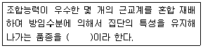

종자기사 (2008-05-11 기출문제)
1과목: 종자생산학
1. 다음 중 후작용(after effect)에 의한 품종퇴화의 설명으로 옳은 것은?
- 콩을 동일 장소에서 재배, 채종을 계속하면 자실(子實)이 소립(小粒)이 되고, 차대식물의 생육도 떨어진다.
- 가을 뿌림 양배추를 여름 뿌림으로 채종으로 계속하여 나가면 조기 추대 종자로 변하기 쉽다.
- 백합에서 목자(木子) 대신 실생으로 번식하면 생육이 좋아진다.
- 타식성 작물에서 채종 개체수가 너무 적을 때는 차대의 유전자형에 편향이 생겨 품종퇴화를 초래할 수 있다.
(정답률: 알수없음)

2. 우리나라 남부지방에서의 맥류 파종 적기는?
- 9월 20일 ~ 9월 30일
- 10월 5일 ~ 10월 10일
- 10월 20일 ~ 10월 30일
- 11월 5일 ~ 11월 10일
(정답률: 알수없음)
3. 다음 중 일반적으로 배휴면(胚休眠)을 하는 종자의 휴면타파법으로 가장 널리 이용되고 있는 방법은?
- 과산화수소 처리
- 열처리
- 저온 층적처리
- 적색광 처리
(정답률: 알수없음)
4. 저장 종자의 병균과 해충을 감소시키는 방법이 아닌 것은?
- 종자의 정선
- 종자의 장기저장
- 종자의 건조처리
- 약제(훈증제)처리
(정답률: 84%)
5. 채종포에서 품종 순도검사를 위한 포장검사는 주로 어느 시기를 전·후로 실시하는가?
- 파종기
- 개화기
- 수확기
- 성숙기
(정답률: 73%)
6. 다음 중 경실종자의 휴면타파를 위하여 가장 많이 이용하는 방법은?
- 과산화수소 처리
- 종자소독
- 종자의 건열처리
- 종피에 기계적 상처
(정답률: 91%)
7. 무, 배추, 양배추 등의 채종포에서 다음 중 어떤 성분이 결핍하면 화주(花柱)가 돌출하거나 개화가 불균일하게 되고, 겨울기간 중에 잎이 심하게 위축되며 화분의 발아·신장도 억제되는가?
- 철
- 붕소
- 인산
- 칼리
(정답률: 알수없음)
8. 벼의 포장검사에서 특정병으로만 취급하는 것으로 짝지어진 것은?
- 도열병, 호마엽고병
- 키다리병, 선충심고병
- 도열병, 키다리병
- 호마엽고병, 선충심고병
(정답률: 알수없음)
9. 종자발아에 영향을 미치는 여러 물리적 요인에 대한 설명 중 틀린 것은?
- 종자 발아 용액의 삼투압이 높으면 침윤이 쉽게 되어 발아가 촉진된다.
- 수분함량이 많은 종자에 감마선을 쬐면 일반적으로 발아율이 떨어진다.
- 언 종자를 천천히 건조시키면 빨리 건조시킨 것보다 피해가 적다.
- 화곡류는 종자의 수분함량이 11~12%이하일 때 기계적 손상을 입는다.
(정답률: 알수없음)
10. 박과 채소의 채조에 관련된 특성으로 틀린 것은?
- 박가 채소는 자웅동주 식물이다.
- 호박류와 멜론류에서는 각각의 종간잡종이 가능하여 육종에 이용한다.
- 오이는 단성화이다.
- 호박은 단명종자(短命種子)이다.
(정답률: 62%)
11. 식물은 개화습성에 따라 유한형과 무한형으로 분류된다. 다음 설명 중 유한형의 특징이 아닌 것은?
- 개화감응을 받으면 영양생장을 멈춘다.
- 동일 식물체 내 꽃들의 개화일자가 거의 같다.
- 개화감응 후에도 영양생장을 계속 한다.
- 동일 식물체 내에서 종자의 성숙기가 거의 같다.
(정답률: 알수없음)
12. 원종포의 경영규모는 일반재배의 몇 %정도가 적당한가?
- 70%
- 80%
- 90%
- 100%
(정답률: 알수없음)
13. 종자 발아에 관여하는 내적조건으로 옳은 것은?
- 온도
- 수분
- 산소
- 종자의 성숙도
(정답률: 60%)
14. 종자정선에 관여하는 요소가 아닌 것은?
- 종자의 두께
- 종자의 마찰계수
- 종자의 색택
- 종자의 활력
(정답률: 알수없음)
15. 종자의 저장과 가장 밀접하게 관계되는 성질의 검사는?
- 순도 검사
- 발아검사
- 수분 검사
- 천립중 검사
(정답률: 알수없음)
16. 다음 중 개화기의 조절방법으로 부적합한 것은?
- 저온처리
- Co2 처리
- 일장처리
- 파종기 조절
(정답률: 19%)
17. 배낭모세포의 염색체는 몇 배체인가?
- 반수체(1n)
- 2배체(2n)
- 4배체(4n)
- 6배체(6n)
(정답률: 60%)
18. 다음 중 종자의 퇴화 증상으로 볼 수 없는 것은?(오류 신고가 접수된 문제입니다. 반드시 정답과 해설을 확인하시기 바랍니다.)
- 효소활동의 증가
- 호흡의 증가
- 종자침출액의 증가
- 유묘의 포장 츌현율 증가
(정답률: 알수없음)
19. 종자 발아검사 시 반복간 발아율의 차이가 최대 허용오차를 벗어나면 다시 실험을 해야 한다. 이 때 최대 허용오차의 범위 설명으로 옳은 것은?
- 평균발아율이 높을수록 허용오차가 커진다.
- 평균발아율이 낮을수록 허용오차는 커진다.
- 평균발아율이 중간일 때 허용오차는 가장 크다.
- 평균발아율과 관계없이 허용오차는 일정하다.
(정답률: 알수없음)
20. 채종포에서 실시하는 포장검사의 주된 목적은?
- 포장의 청결도
- 품종의 유전적 순도
- 잡초발생 정도
- 작물생육 상태
(정답률: 67%)
2과목: 식물육종학
21. 우리나라에서 배추의 F1품종의 종자생산이 남해안과 그 인근 도서 지방에 집중되어 있는 이유를 설명한 것 중 옳지 않은 것은?
- 노지월동이 가능하기 때문에
- 다른 품종과의 격리가 용이하기 때문에
- 춘화처리에 필요한 저온초리가 가능하기 때문에
- 균, 병 등 토양 전염병이 없기 때문에
(정답률: 40%)
22. 자가불화합성을 타파시키기 위하여 실용화되고 있는 처리 방법은?
- SO2 처리
- N2 처리
- CO2 처리
- HF 처리
(정답률: 알수없음)
23. 쌍자엽식물 형질전환에 가장 널리 이용하고 있는 유전자 운반체는?
- E. coli
- 바이러스의 외투단백질
- Ti-plasmid
- 제한효소
(정답률: 50%)
24. 실용적 가치가 있는 이질 복이배체를 작성하는 방법으로서 가장 옳은 것은?
- 이종속간 교잡을 하고 게놈을 배가시킨다.
- 이종속간 교배만 하면 된다.
- 2배체에 콜히친 처리를 한다.
- 톱 교잡을 한다.
(정답률: 알수없음)
25. 연관과 교차에 관한 기술 중 옳지 않은 것은?
- 교차는 염색체상의 유전자의 위치거리가 멀수록 잘 일어난다.
- 교차는 그 유전적 형질의 관계가 완전히 먼 것일수록 일어나기 쉽다.
- 같은 염색체 내에 있는 우열이 구분된 2개의 인자(AB 및 ab)사이에 연관이 있다면 멘델의 독립유전에 따르지 않는 유전현상이 일어날 수 있다.
- 유전자들이 서로 연관되어 있으면 독립유전을 하는 경우에 비해 육종이 어렵다.
(정답률: 알수없음)
26. 인위적으로 단위결과를 유도할 수 있는 방법으로만 짝지어진 것은?
- 꽃가루의 자극 이용, 배수성 이용
- 배수성 이용, 중복수정 이용
- 중복수정 이용, 꽃가루배양 이용
- 교잡 이용, 꽃가루의 자극 이용
(정답률: 알수없음)
27. 양성잡종 AaBb 를 자식하게 되면 다음 대에 AaBb 의 유전자형은 얼마나 나타나게 되는가?
- 1/16
- 2/16
- 4/16
- 8/16
(정답률: 알수없음)
28. 일반적으로 식물자원의 도입 후 처리과정이 옳은 것은?
- 통관검사 → 격리재배 → 도입포장재배 → 특성조사 → 종자보급
- 통관검사 → 도입포장재배 → 격리재배 → 특성조사 → 종자보급
- 통관검사 → 격리재배 → 특성조사 → 도입포장재배 → 종자보급
- 격리재배 → 특성조사 → 도입포장재배 → 병원균검사 → 종자보급
(정답률: 알수없음)
29. 형질전환식물을 선발하기 위해 GUS효소유전자를 표지유전자로 사용한 경우, 재조합 DNA를 주입시킨 박테리아의 배양배지에 X-GLU를 첨가했을 때 형질 전환된 세포는?
- 청색으로 나타난다.
- 백색으로 나타난다.
- 녹색으로 나타난다.
- 적색으로 나타난다.
(정답률: 알수없음)
30. 원원종포에서 생산된 종자를 재식하여 채종포용 종자를 생산하기 위하여 원종포에서는 1주당 몇 본씩 심는가?
- 1본
- 2본
- 3본
- 4본
(정답률: 알수없음)
31. Personanten형 자가불화합성 유전조성을 가진 S1S3 X S2S3 교잡에서 다음 대의 유전자형은?
- S1S2
- S1S3
- S1S2, S1S3
- S1S2, S2S3
(정답률: 알수없음)
32. 다음 중 순계설을 주장한 사람은?
- De Vries
- Johannsen
- Mendel
- Lamark
(정답률: 알수없음)
33. 계통 육종법(pedigree method)을 많이 사용하는 작물은?
- 자식성 식물
- 타식성 작물
- 영양번식 작물
- 번식방법과 관계없다.
(정답률: 알수없음)
34. 변이를 감별하기 위하여 후대검정을 실시하였다. 후대검정 방법으로 올바른 것은?
- 새로 육성된 품종을 사용하여 전국 16개 지역에서 내병성 조사를 한다.
- 유전적으로 고정된 10품종의 내병성을 앞으로 5년 동안 계속해서 조사한다.
- 내병성 개체로 선발된 것의 종자를 이용하여 다음 해 다시 내병성 조사를 한다.
- 지난해 내병성 개체로 선발된 것을 금년에는 내충성 조사를 한다.
(정답률: 25%)
35. 자연적으로 발생한 변이체를 선발하여 품종으로 육성하는 육종방법은?
- 교배육종
- 돌연변이육종
- 분리육종
- 잡종강세육종
(정답률: 19%)
36. 유전자형이 Aa인 자식성 식물의 F4 세대에 있어 동형접합(homo)개체의 비율은?
- 1/16
- 1/8
- 7/8
- 15/16
(정답률: 46%)
37. 다음 [보 기]의 ( )안에 알맞은 것은?

- 순계품종
- 합성품종
- 도입품종
- 다계품종
(정답률: 34%)
38. 선발육종법 중 누적선발법에 해당 되는 것은?
- 단기간에 순환적으로 계통의 조합력을 높인다.
- 3년을 1기간으로 하여 많은 개체를 자식 시킴과 제 2년째 이잡종의 생산력을 비교한다.
- 2개 품종 또는 복교잡을 A,B의 기본 집단으로 하여 A집단에는 많은 개체(200 정도)를 선발한다.
- 자식초기에 게통선발과 S3 ~ S4 이후에 톱교배 및 계통간의 교잡에 의한 검정을 한다.
(정답률: 알수없음)
39. 콜히친을 처리하여 배수체를 만드는 원리를 기술한 것 중 틀린 것은?
- 분열 중에 있는 세포의 방추사와 세포막 형성을 억제한다.
- 염색체 분열자체에는 장해를 주지 않는다.
- 4배성인 1개의 복구핵을 형성한다.
- 교배가 쉬워지며 조합능력을 증진시킨다.
(정답률: 알수없음)
40. 논 10m2에서 생산된 재래종 “가”의 수확기 지상부 전체 건물중은 40kg이었고 쌀의 생산량은 18kg이었다. 이 품종의 수확지수는 얼마인가?
- 58
- 720
- 2.2
- 0.45
(정답률: 알수없음)
3과목: 재배원론
41. 대기 중 이산화탄소의 농도는?
- 0.03%
- 0.⑤%
- 0.07%
- 0.10%
(정답률: 알수없음)
42. 벼를 재배할 때 만식 적응성이 큰 기상생태형은?
- Blt 형
- blt 형
- blT 형
- bLt 형
(정답률: 알수없음)
43. 다음 중 목초의 파종에 주로 이용하는 파종양식은?
- 적파
- 점파
- 조파
- 산파
(정답률: 알수없음)
44. 다음 중 화학적, 생리적으로 염기성 비료에 속하는 것은?
- (NH4)2SO4
- CaCN2
- CO(NH2)2
- K2SO4
(정답률: 20%)
45. 식물에도 암수의 성별이 있다고 밝혀낸 사람은?
- Camerarius
- Darwin
- Weismanm
- Johannsen
(정답률: 42%)
46. 동·상해의 피해를 줄이기 위한 응급대책이 아닌 것은?
- 연소법
- 피복법
- 살수빙결법
- 경화법
(정답률: 알수없음)
47. 유리온실에서 작물을 재배할 때 도장(徒長)하는 주된 이유는?
- 고온
- 과습
- CO2 부족
- 자외선 부족
(정답률: 10%)
48. 식물체내 이동성이 낮아 결핍증상이 어린잎에 나타나는 원소들은?
- S, P, Mg
- Mn, P, Fe
- Ca, Mn, S
- Mg, Ca, P
(정답률: 알수없음)
49. 유용한 토양 미생물이 활동하기에 유리한 조건으로 옳은 것은?
- 토양에 무기성분이 많다.
- 토양에 수분함량이 많다.
- 토양반응이 중성에서 미산성이다.
- 토양온도가 30 ~ 40℃ 정도이다.
(정답률: 0%)
50. 작물의 분화와 발달에 대하여 틀리게 기술한 것은?
- 작물의 분화는 인위적으로만 이루어진다.
- 원래의 작물에서 여러 갈래로 갈라지는 현상이 분화이다.
- 유전적 교섭이 방지되는 원인은 지리적, 생리적 격절이다.
- 분화의 마지막 과정은 유전적인 안정상태이다.
(정답률: 37%)
51. 일반적으로 작물의 T/R율이 감소하는 조건은?
- 일사량이 부족한 경우
- 토양 수분이 부족한 경우
- 질소를 다량 시용한 경우
- 토양통기가 불량한 경우
(정답률: 8%)
52. 종자의 발아에 관여하는 조건의 설명으로 틀린 것은?
- 수분흡수는 각종 효소들의 작용을 촉진한다.
- 산소의 공급은 호기 호흡을 촉진하여 발아를 잘 되게 한다.
- 광의 파장이 600 ~ 700nm의 범위에서는 발아를 촉진한다.
- 화학물질은 종자의 광 감수성을 바꾸지 못한다.
(정답률: 알수없음)
53. 다음 중 녹식물춘화형식물에 속하는 작물은?
- 추파맥류
- 완두
- 양배추
- 잠두
(정답률: 알수없음)
54. 식물체에서 영양번식의 이점이 아닌 것은?(오류 신고가 접수된 문제입니다. 반드시 정답과 해설을 확인하시기 바랍니다.)
- 다양한 변이가 발생
- 동일 품종의 다량 생산
- 모수의 유전질을 차대에 계승
- 개화 및 결과의 단축
(정답률: 알수없음)
55. 지베릴린(gibberellin)에 대한 설명으로 올바른 것은?
- 지베렐린은 내열성(耐熱性)이 없고 일종의 효소와 비슷하다.
- 지베렐린은 화곡류의 분얼을 촉진시킨다.
- 지베렐린은 보리가 발아할 때 배유에서 생성된다.
- 지베렐린은 반투막을 통과하고 불휘발성이다.
(정답률: 알수없음)
56. 동상해(凍霜害)의 일반적인 대책으로 틀린 것은?
- 토질을 개선하여 서릿발의 발생을 경감시킨다.
- 배수를 꾀하여 생육을 건실하게 한다.
- 이랑을 세워 뿌림 골을 깊게 한다.
- 인공수분을 한다.
(정답률: 알수없음)
57. 다음 중 요수량(要水量)이 가장 적은 작물은?
- 보리
- 오이
- 호박
- 완두
(정답률: 알수없음)
58. 에세폰의 생리작용을 가장 바르게 설명한 것은?
- 발아억제
- 생장촉진
- 개화촉진
- 성숙과 착색지연
(정답률: 14%)
59. 풍속이 2~4m/s 이상일 때 식물체에서 일어나는 생리적 장해 현상이 아닌 것은?
- 작물체온이 낮아진다.
- CO2의 흡입량이 증대된다.
- 수분·수정이 저해된다.
- 습도가 낮으면 백수현상이 나타난다.
(정답률: 0%)
60. 복원중(복원 오류로 문제 및 보기 내용이 정확하지 않습니다. 내용을 아시는분께서는 오류 신고를 통하여 내용 작성부탁 드립니다. 정답은 1번입니다.)
- 복원중
- 복원중
- 복원중
- 복원중
(정답률: 40%)
4과목: 식물보호학
61. 유기인계 살충제의 살충기작(殺蟲機作)은?
- 신경독 작용
- 원형질독 작용
- 호르몬 교란
- 호흡독 작용
(정답률: 50%)
62. 다음 중 종자소독제가 아닌 것은?
- 티오파네이트메틸·티람제(호마이)
- 베노밀·티람제(벤레이트티)
- 프로크로라즈제(스포탁)
- 페노뷰카브제(밧사)
(정답률: 알수없음)
63. 알 → 약충 → 성충 의 3시기로 변화하는 곤충 중에 약충과 성충의 모양이 완전히 다르고, 실제 잠자리목과 하루살이목에서 볼 수 있는 변태는?
- 완전변태
- 반변태
- 점변태
- 무변태
(정답률: 알수없음)
64. 식물병을 진단하는 방법 중 생물에 의한 진단법에 속하는 것은?
- 눈에 의한 진단
- 지표식물에 의한 진단
- 해부학적 진다
- 이화학적 진단
(정답률: 알수없음)
65. 다음 중 고추 역병을 비롯해 각종 작물의 역병 발생에 가장 관련이 깊은 환경 요인은?(오류 신고가 접수된 문제입니다. 반드시 정답과 해설을 확인하시기 바랍니다.)
- 토양수분
- 일조량
- 풍향
- 토성
(정답률: 8%)
66. 창고에 보관 중이 100Kg의 콩에 살충제를 10ppm 농도로 처리하려고 할 때 살충제의 소요약량을 계산하면 얼마인가?(단, 살충제는 50% 유제이며, 비중은 1이다.)
- 0.02mL
- 0.2mL
- 2mL
- 20mL
(정답률: 17%)
67. 식물이 병원균에 감염되었으나 실질적인 수량에는 큰 영향이 없는 것과 가장 밀접한 관련이 있는 것은?
- 면역성
- 내병성
- 병회피
- 감수성
(정답률: 31%)
68. 농업 해충의 방제법 분류 중 성격이 다른 하나는
- 윤작
- 혼작
- 포장위생
- 온도처리
(정답률: 59%)
69. 다음 자낭균문에 속하는 병원균 중에서 자낭과를 형성하지 않는 병원균은?
- 맥류 흰가루병균
- 복숭아나무 잎오갈병균
- 사과나무 부란병균
- 배나무 검은별무늬병균
(정답률: 30%)
70. 곤충의 순환계에 대한 설명으로 틀린 것은?
- 혈액의 적절한 순환을 돕기 위해 펌프 할 수 있는 구조로 되어있다.
- 폐쇄 순환계이다.
- 혈액은 혈장과 혈구세포로 구성되어 있다.
- 등횡경막과 배횡경막이 있다.
(정답률: 알수없음)
71. 작물의 피해에 대한 주요원인이 아닌 것은?
- 진균에 의해 일어나는 해
- 선충에 의해 일어나는 해
- 농약에 의해 일어나는 해
- 작물유전자 조작에 의해 일어나는 해
(정답률: 알수없음)
72. 다음 식물 병원세균 중 그람양성 세균속은?
- Pseudimonas
- Xanthomonas
- Erwinia
- Clavibacter
(정답률: 알수없음)
73. 논 잡초의 생태학적 방제법으로 고랭이류, 골풀류 및 방동사니류 등의 수생잡초 방제뿐만 아니라 건토효과가 유도되어 작물 뿌리의 활력을 증진시킬 수 있는 방법은?
- 제한경운법
- 관개수조절
- 시비조절
- 방수용 천이용
(정답률: 60%)
74. 완두콩 바구미의 연발생 횟수와 월동태는?
- 연1회 발생, 성충
- 연 2~3회 발생, 성충
- 연 4~5회 발생, 유충
- 연 1회 발생, 번데기
(정답률: 알수없음)
75. 작물과 잡초의 경합요인이 아닌 것은?
- 비료
- 수분
- 광
- 오염된 공기
(정답률: 알수없음)
76. 식물병원 바이러스의 설명으로 틀린 것은?
- 단백질로 된 외피를 가지고 있다.
- 핵산으로 구성되어 있다.
- 인공배지에서 증식이 가능하다.
- 생물에 기생하며 병을 일으킨다.
(정답률: 알수없음)
77. 다음 중 가장 깨끗한 물에서도 생육이 가능하여 발견되는 생물은?
- 나방파리
- 꽃등에
- 모기붙이
- 민날개 강도래
(정답률: 알수없음)
78. 다음 중 일반적인 곤충가슴의 형태와 부속기관에 대한 설명으로 틀린 것은?
- 곤충의 가슴은 앞가슴, 가운데 가슴, 뒷가슴의 3마디로 구분된다.
- 부속기관으로서 날개와 다리가 있다.
- 대부분의 곤충 날개는 2쌍이다.
- 다리는 3쌍으로서 앞가슴에 1쌍, 뒷가슴에 2쌍이다.
(정답률: 알수없음)
79. 다음 중 종자나 지하경으로 번식하는 잡초는?
- 벋음 씀바귀
- 자주 괭이밥
- 반하
- 쇠털골
(정답률: 알수없음)
80. 다음 중 우리나라 맥류포장의 동계 1년생에 해당되는 잡초는?
- 애기수영
- 왕바랭이
- 광대나물
- 민들레
(정답률: 알수없음)
5과목: 종자관련법규
81. 품종목록 등재의 취소사유가 아닌 것은?
- 품종의 성능이 심사기준에 미달된 때
- 당해 품종의 재배로 인하여 그 지역의 미화작업에 조화가 맞지 아니할 때
- 부정한 방법으로 품종목록의 등재를 받은 때
- 동일 품종이 2이상의 품종 명칭으로 중복하여 등재된 때의 나중에 등재된 품종
(정답률: 알수없음)
82. 다음 중 종자산업법의 목적으로 부적합한 것은?
- 육성자의 권리 보호
- 농업, 임업 및 수산업 생산의 안정
- 기존품종과 신품종으로 관리체계의 이원화
- 주요작물의 품종성능이 관리
(정답률: 53%)
83. 종자 산업법상의 벌칙 규정 중 1년 이하 징역 또는 1천만원 이하의 벌금에 해당하지 않는 것은?
- 품종목록 등재대상작물의 종자를 보증 받지 않고 판매 또는 보급한다.
- 사기 기타 부정한 방법으로 품종보호사정 또는 심결을 받은 자
- 등록이 취소된 종자업을 계속 영위 또는 영업정지를 받고도 종자업을 계속 영위한자
- 농림수산식품부장관에게 생산·판매신고를 하지 않은 품종의 종자를 생산·판매한다.
(정답률: 28%)
84. 씨감자를 수입하고자 한다. 이 씨감자의 수입신고가 면제되는 종자 수량은?(단, 1품종의 종자이다.)
- 100kg
- 80kg
- 60kg
- 50kg
(정답률: 알수없음)
85. 종자산업법에서 규정한 '종자관리사'의 정의로 옳은 것은?
- 종자산업법에 의한 자격을 갖춘 자로서 국가나 종자업자가 생산한 종자를 보증하는 자
- 종자산업법에 의한 자격을 갖춘 자로서 종자업자가 생산하여 판매 수출 또는 수입하고자 하는 종자를 보증하는 자
- 국가기술자격인 종자기사 시험에 합격하는 자
- 국가기술자격인 종자산업기사 시험에 합격한 자로 품종보호권을 보유하고 있는 자
(정답률: 27%)
86. 종자산업법규상 해외수출용 종자의 보증표시 사항에 관하여 맞는 것은?
- 바탕색은 흰색으로 대각선은 보라색으로 글씨는 검정색으로 표시한다.
- 바탕색은 흰색으로 글씨는 검정색으로 표시한다.
- 바탕색은 청색으로 글씨는 검정색으로 표시한다.
- 바탕색은 적색으로, 글씨는 검정색으로 표시한다.
(정답률: 알수없음)
87. 종자산업법상 등록되지 않은 품종의 명칭을 사용하여 벼종자를 판매한 자에 대한 벌칙 기준은?
- 100만 원 이하의 과태료
- 200만 원 이하의 과태료
- 300만 원 이하의 과태료
- 500만 원 이하의 과태료
(정답률: 알수없음)
88. 다음 작물에 대한 종자업을 영위하고자 하는 자가 종자관리사를 1인 이상 두어야만 하는 경우는?
- 뽕
- 장미
- 수박
- 버뮤다그래스
(정답률: 알수없음)
89. 다음 중 품종명칭등록을 받을 수 있는 경우로 옳은 것은?
- 당해 품종의 원산지를 오인하게 할 우려가 있는 품종명칭
- 외국에 등록된 상표와 유사한 품종명칭
- 복원중
- 다른 품종과 관련이 있는 것으로 오인할 우려가 있는 품종명칭
(정답률: 알수없음)
90. 다음 중 수입적응성시험에 대한 설명으로 틀린 것은?
- 화훼류 종자는 수입적응성 시험을 하지 않아도 된다.
- 버섯류 종균은 한국종균생산협회에 수입적응성 시험을 신청하여야 한다.
- 표준품종은 국내외 품종 중 널리 재배되고 있는 1개 이상의 품종으로 한다.
- 재배시험기간은 최소 1작기 이상으로 하되 실시기관의 장이 필요하다고 인정하는 경우에는 단축 또는 연장할 수 있다.
(정답률: 알수없음)
91. 종자산업법에서 품종보호권의 침해죄 성립 요건에 해당되지 않는 것은?
- 타인이 실시하는 품종이 보호품종과 동일하여야 한다.
- 품종보호권자의 허락 없이 타인의 보호품종을 업으로서 실시한다.
- 고의로 유사한 보호 품종 명칭을 당해 보호 품종이 속하는 작물 종의 품종에 사용한다.
- 실시자가 자기가 하는 행위에 대한 결과를 식별할 수 없는 정도의 지능을 갖추고 있어도 침해죄가 적용된다.
(정답률: 70%)
92. 다음 중 품종보호출원서의 기재사항이 아닌 것은?
- 육성자의 성명 및 주소(단, 육성자와 품종보호출원인이 동일인이 아닌 경우)
- 제출연월일
- 품종의 특성설명 및 품종육성과정의 설명
- 재배적응지역
(정답률: 22%)
93. 종자산업법상 다음 중 농림수산식품부에 제출하는 서류 등 효력발생시기에 관하여 맞는 것은?
- 발생된 날
- 도달된 날
- 발송 3일 후
- 도달 3일 후
(정답률: 55%)
94. 종자산업법규상 종자의 보증표시에 사용되지 않은 것은?
- 포장일자 및 보증의 유효기간
- 품종보호권자의 허락 없이 타인의 보호품종을 업으로서 실시한다.
- 고의로 유사한 보호품종명칭을 당해 보호품종 명칭을 당해 보호품종이 속하는 작물 종의 품종에 사용한다.
- 실시자가 자기가 하는 행위에 대한 결과를 식별할 수 없는 정도의 지능을 갖추고 있어도 침해죄가 적용된다.
(정답률: 알수없음)
95. 품종목록등재대상작물의 사후 관리시험의 검사항목이 아닌 것은?
- 품종의 순도
- 품종의 진위
- 품종의 성능
- 종자전염병
(정답률: 20%)
96. 종자산업법규상 보증표시가 바탕색은 흰색이고, 보라색 대각선 표시와 검정색 글씨로 표시되었다면 어떤 채종 단계의 보증 종자 인가?(오류 신고가 접수된 문제입니다. 반드시 정답과 해설을 확인하시기 바랍니다.)
- 원원종
- 원종
- 보급종(I)
- 보급종(II)
(정답률: 알수없음)
97. 품종보호권이 설정되어 있지 않은 잔디 종자를 중국으로부터 수입하여 판매하고자 한다. 이때 신고(신청)사항은?
- 농림수산식품부장관에게 당해종자시료를 첨부하여 신고한다.
- 품종보호권을 설정 등록 신청한다.
- 국가 품종목록등재 신청을 한다.
- 신고(신청) 없이 판매한다.
(정답률: 알수없음)
98. 인공 씨감자를 재배하여 생산된 종자를 씨감자로 사용하는 경우의 종자검사용 괴경 중량은?
- 0.1 ~ 5g
- 5~50g
- 50~100g
- 100~250g
(정답률: 30%)
99. 우리나라에서 실시하고 있는 종자품위 검정순서로 옳은 것은?
- 수분검사 → 순도검정 → 발아검사 →건전도검정 →종 또는 품종의 검정
- 종 또는 품종의 검정 → 수분검사 →순도검정 →발아검사 →건전도검정
- 수분검사 →종 또는 품종의 검정 →순도검정 →발아검사 →건전도검정
- 건전도검정 →종 또는 품종의 검정 →수분검사 →순도검정 →발아검사
(정답률: 0%)
100. 다음 심판위원회의 기능 설명 중 틀린 것은?
- 심판위원회는 심사관의 거절사항에 대해 심판이 청구되는 경우 재심을 실시한다.
- 심판위원회에 품종보호심판위원회위원장과 품종보호심판위원을 두되, 심판위원 중 1인은 상임으로 한다.
- 심사관 및 품종보호에 관한 이해관계인의 무효심판청구에 대해 심판을 한다.
- 심판위원회에서 무효심판에 대해 품종보호권을 무효로 한다는 심결이 확정된 경우 그 품종보호권은 처음부터 없었던 것으로 본다.
(정답률: 알수없음)